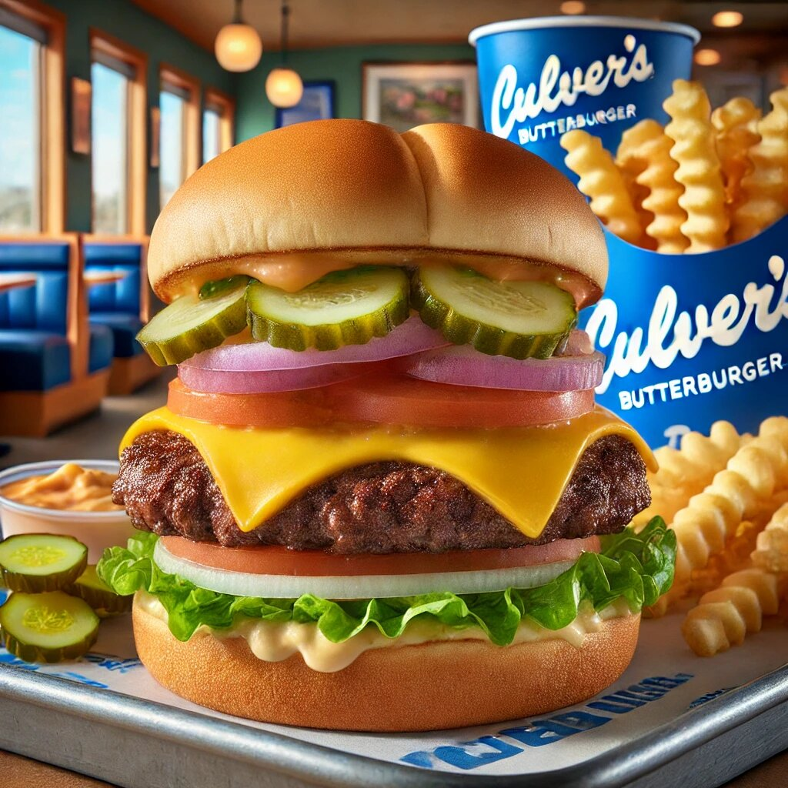

When it comes to burgers, there’s a lot of competition out there. From fast-food joints to gourmet restaurants, everyone seems to have their own spin on this classic American dish. But if you’re looking for a burger that stands out from the crowd, one that’s juicy, flavorful, and downright irresistible, then you need to try the Culver’s ButterBurger. This isn’t just any burger—it’s a culinary experience that will leave you craving more. Let’s dive into what makes the Culver’s ButterBurger so special and why it deserves a spot in your heart (and stomach).
First things first, let’s clear up any confusion. The culvers butter burger isn’t a burger made entirely of butter (though that does sound intriguing). Instead, it’s a perfectly crafted burger that gets its name from the lightly buttered, toasted bun. This simple yet genius touch elevates the entire burger, adding a rich, savory flavor that complements the juicy patty inside. It’s like the cherry on top of a sundae—except it’s butter on a burger, and it’s just as magical.
At the heart of every great burger is the patty, and Culver’s doesn’t disappoint. Their ButterBurgers are made with 100% fresh, never frozen beef. That’s right—no frozen patties here. The beef is sourced from trusted farmers, ensuring top-notch quality and flavor. Each patty is cooked to order, so you get a burger that’s fresh off the grill every single time.
The result? A patty that’s juicy, tender, and packed with flavor. Whether you like your burger medium-rare or well-done, Culver’s has got you covered. And let’s be honest, there’s something incredibly satisfying about biting into a burger that’s so juicy, you might need an extra napkin (or two).
Now, let’s talk about the bun. A good burger needs a good bun, and Culver’s takes this to the next level. Their buns are lightly buttered and toasted to golden perfection. This not only adds a delicious buttery flavor but also gives the bun a slight crispiness on the outside while keeping it soft and fluffy on the inside.
The buttered bun is the secret weapon of the ButterBurger. It’s the perfect vessel for holding all the delicious ingredients together without falling apart. Plus, it adds an extra layer of richness that makes every bite feel like a treat. It’s like the burger equivalent of a warm, buttery croissant—comforting, indulgent, and utterly delightful.
A great burger isn’t just about the patty and the bun—it’s also about the toppings. And Culver’s knows how to do toppings right. From crisp lettuce and ripe tomatoes to tangy pickles and creamy cheese, every ingredient is fresh and flavorful.
One of the best things about the ButterBurger is that you can customize it to your heart’s content. Want to keep it simple with just ketchup and mustard? Go for it. Feeling adventurous? Load it up with bacon, sautéed mushrooms, and a fried egg. The possibilities are endless, and no matter what you choose, the ButterBurger will deliver a flavor explosion that’ll have you coming back for more.
If you’re a fan of cheese, you’re in for a treat. Culver’s offers a variety of cheese options for their ButterBurgers, including classic American, cheddar, and even Swiss. The cheese is melted to perfection, creating a gooey, creamy layer that complements the juicy patty and buttery bun.
And let’s not forget about the Cheese ButterBurger. This beauty takes things up a notch by adding not one, but two slices of cheese. It’s cheesy, it’s indulgent, and it’s everything you could ever want in a burger. If you’re a cheese lover, this one’s a must-try.
One of the things that sets Culver’s apart is their commitment to freshness. Everything from the beef to the buns to the toppings is made with high-quality ingredients. You can taste the difference in every bite.
The vegetables are crisp and vibrant, the cheese is rich and creamy, and the beef is flavorful and juicy. It’s clear that Culver’s takes pride in using fresh ingredients, and it shows in the final product. When you bite into a ButterBurger, you’re not just eating a burger—you’re experiencing a meal made with care and attention to detail.
One of the best things about the ButterBurger is its versatility. Whether you’re in the mood for a classic cheeseburger or something a little more adventurous, Culver’s has a ButterBurger for you.
For those who like to keep it simple, the Original ButterBurger is a great choice. It’s a no-frills, all-flavor kind of burger that hits all the right notes. If you’re feeling a bit more indulgent, try the Bacon Deluxe ButterBurger. It’s loaded with crispy bacon, melted cheese, and all the classic toppings. And if you’re really hungry, the Double ButterBurger is sure to satisfy. With two juicy patties and double the cheese, it’s a burger lover’s dream come true.
While the ButterBurger is undoubtedly the star of the show, it’s even better when paired with Culver’s delicious sides. From their famous crinkle-cut fries to their creamy mashed potatoes and gravy, there’s something for everyone.
And let’s not forget about the cheese curds. These little bites of heaven are crispy on the outside, gooey on the inside, and absolutely addictive. They’re the perfect accompaniment to a ButterBurger, adding a fun and flavorful twist to your meal.
Culver’s isn’t just a place to grab a quick bite—it’s a place to bring the whole family. The welcoming atmosphere, friendly staff, and delicious food make it a favorite for families everywhere.
Kids love the ButterBurger too, and Culver’s offers smaller portions for little ones. It’s a great way to introduce them to the joy of a well-made burger without overwhelming their taste buds. Plus, with options like chicken tenders and mac and cheese, even the pickiest eaters will find something they love.
Culver’s has been serving up delicious food since 1984, and their commitment to quality has never wavered. They take pride in using fresh, high-quality ingredients and preparing each meal with care.
This dedication to quality is evident in every bite of a ButterBurger. From the juicy patty to the buttery bun to the fresh toppings, every element is carefully crafted to create a burger that’s truly exceptional. It’s this attention to detail that keeps customers coming back time and time again.
Culver’s originated in Wisconsin, and their ButterBurger is a true reflection of Midwestern hospitality. It’s hearty, comforting, and made with love. When you bite into a ButterBurger, you’re not just enjoying a meal—you’re experiencing a piece of Midwest culture.
The ButterBurger is a testament to the simple pleasures in life. It’s a reminder that sometimes, the best things are the ones that are made with care and served with a smile. Whether you’re a lifelong Midwesterner or just passing through, the ButterBurger is a taste of home that everyone can appreciate.
There’s something about a great burger that brings people together. Whether you’re sharing a meal with family, catching up with friends, or enjoying a solo treat, the ButterBurger is the perfect companion.
It’s a burger that sparks conversation, creates memories, and leaves everyone at the table smiling. And let’s be honest, isn’t that what great food is all about?
In a world full of burgers, the Culver’s ButterBurger stands out as a true gem. It’s a burger that’s made with care, packed with flavor, and designed to delight. From the juicy patty to the buttery bun to the fresh toppings, every element is crafted to perfection.
So, the next time you’re craving a burger, skip the ordinary and go for the extraordinary. Head to Culver’s and treat yourself to a ButterBurger. Your taste buds will thank you, and you’ll understand why this burger has earned its place in the hearts of so many.
After all, life’s too short for boring burgers. Go ahead, take a bite, and savor the deliciousness that is the Culver’s ButterBurger. You won’t regret it.